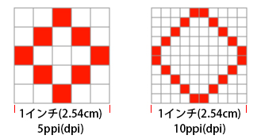

本項では、画像解像度についての概要を学習します。
画像解像度とは1インチ（2.54cm）に含まれるピクセル数を表す単位を指します。
単位は「pixel/inch（ピクセルパーインチ）」あるいは「ppi」で表記されます。
たとえば下の左側の図のように、1インチ四方の正方形を《5 ppi》で設定した場合、
ピクセル総数は《25ピクセル》（=5×5）になりますが、
右側の図のように倍の《10 ppi》で設定した場合のピクセル総数
は《100ピクセル》（=10×10）になります。

解像度のイメージ図
このように解像度の数値が大きくなればなるほど、それだけピクセルの密度が高くなるため、
より細かくより多くの色を再現した画像が作成できます。
逆に数値が小さければ荒い画像になると覚えておきましょう。
ちなみにモニター上で見る点はピクセルとして表記されますが、
印刷物ではドット（丸い点）として表示されるため
プリンタなどの解像度表示は「dot/inch （ドットパーインチ）」
あるいは「dpi」で表記されます。
これは単位の違いだけで、実際の解像度に違いはありません。
画像の使用用途に合わせて解像度を変更する必要があります。
たとえば印刷物で使用する画像の場合、紙の質やプリンタの性能によって変化します。
印刷用の画像解像度は一般的に「300〜350dpi」を設定することが多いですが、
新聞紙のようなにじみの多い用紙を使用する場合は、
インクのにじみを考慮して「150dpi」程度に抑える場合があります。
また、ポスターのように少し離れたところから見ることを想定した大判の印刷物も
「150dpi」程度の低めの解像度に設定する場合があります。
WEB用素材として作成された画像の場合は表示するモニターの解像度に依存します。
現在、市場に流通しているWindows用モニターのほとんどが解像度「96ppi」で設定されています。
（Mac用の古いモニターは「72ppi」が一般的です）
そのため、モニター解像度以上の解像度で作成すると、無駄にピクセル数が多すぎて、
画像サイズ、ファイルサイズともに大きな画像になってしまいます。
下に用途別の解像度の目安を記載します。
これを参考に解像度の設定を行いましょう。
| 用途 |
解像度 |
|---|---|
| WEB | 72ppi |
| 商業印刷物 | 350dpi |
| 家庭用プリンタ | 300dpi |
以上でこの項の学習は終了です。
次の項へ進んでください。